Few years ago (to be precise, 2017) when I was working as a Intern at Seek company I was introduced to a beautiful package VEDAR for sentiment analysis project. VEDAR is is a lexicon and rule-based sentiment analysis tool that is specifically attuned to sentiments expressed in social media. This package is easy to use and easily understandable. Here, I will show you how to do sentiment analysis on twitter data.
What is Sentiment Analysis?
As the name suggest sentiment analysis is understanding what people think and what they express in words.
Over the years social media has become the medium of communication and it is easier to collect and analyse more accurately. Various sentiment Analysis tools have
been build to determin series of emotions behind the words. if you are looking for a wider public opinion then Sentiment Analysis is the one.
Step 1:
Extracting Data,
The current hot topics in India are COVID, Sushant Singh Rajput, Modi Government. Let's understand what people are more talking about in social media Twitter And
whether the sentiment is polarity based (positive, negative or neutral). From my previous blog on "Twitter data extraction" we know how to fetch data. So i will directly jump to sentiment analysis.
I am considering the data population of first 100 tweets for all the 3 sectors (#COVID, #SushantSinghRajput, #ModiGov) as of 2020-09-09 as below
#COVID
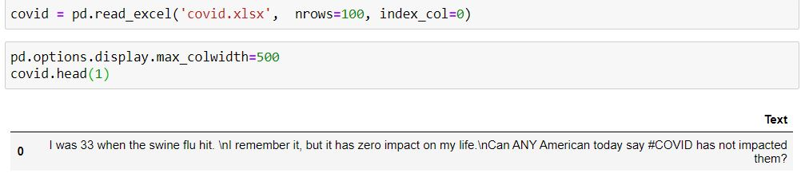
#ModiGovernment
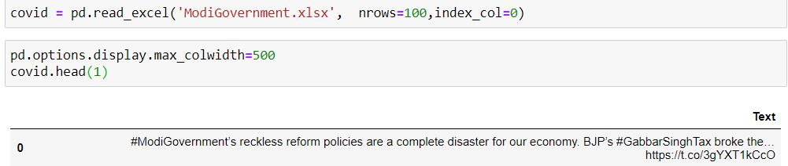
#SushantSinghRajput
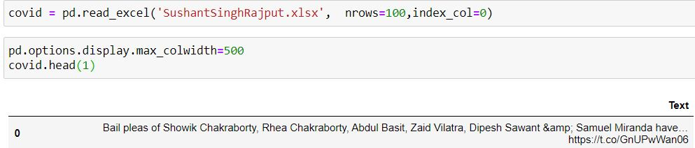
We now have data for analysis. Before that lets see theword cloud for each hashtags which will give us rough idea of what word people are useing the most while tweeting.

Step 2:
Installing VEDAR and import,
Using command prompt install VaderSentiment as below. Within a second this installation will be complete.
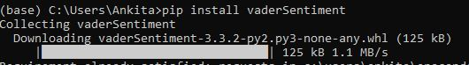
After successful installation, let's import the package. As the analyser name "SentimentIntensityAnalyzer" is big I am renaming it is "sia".
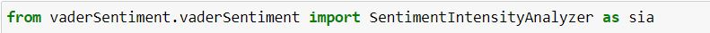
Step 3:
Analysis,
Vader sentiment method returns the values to represent the amount of negative, positive and neutral sentiment and also works out the compound
sentiment value to indicate overall sentiment popularity.
Positve Sentiment: Compound score >=0.5
Neutral Sentiment: Compound score >0.5 and compound score <0.5
Negative Sentiment: Compound score <=0.5
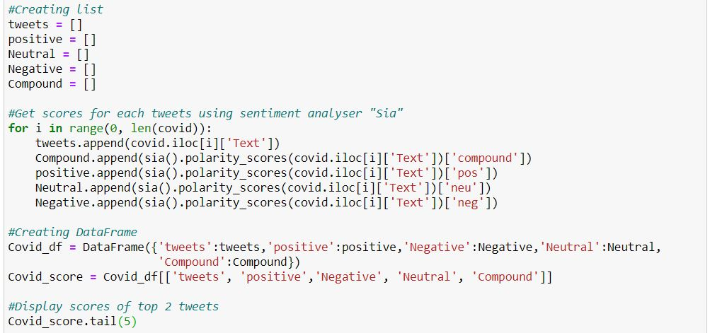
Similarly, pass the othe 2 datasets and extract the popularity scores. Below is the top 3 tweets scores for each hashtags.
Scores for tweet #COVID
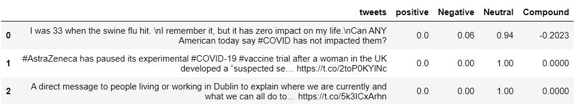
Scores for tweet #SushantSinghRajput
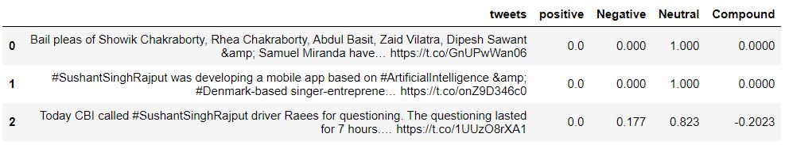
Score for tweet #ModiGovernment
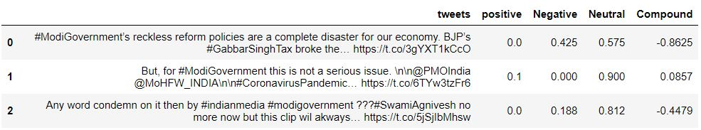
The above gives us each tweet scores but we want to understand what is the overall population sentiment on the 3 hashtags. So lets
do a simple average of the 100 tweets to find the overall scores for each hastags.
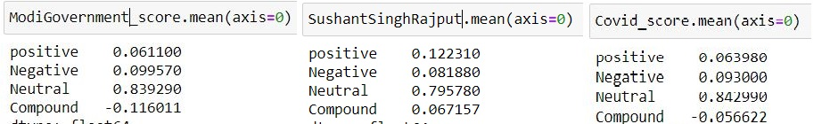
Using Graphical representation we can clearly see the sentiments
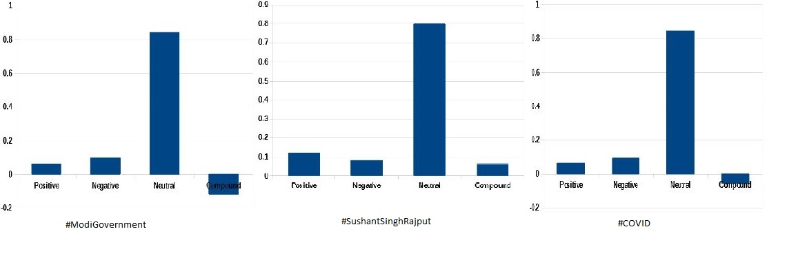
The compound score which determines exterme positive (+1) and extreme negative (-1). In this case the sentiment shows that
people are taking more negatively about Modi government and about Covid where as sentiments regarding sushant singh rajput remains more of positive.
We can clearly see that this analysis need more beautifying of the data for correct results.
Different approaches acan be used for better results such as,
Approach POS: Part of Speech
This is the process of assigning POS to each word. This will help in picking the correct word for sentiment analysis. Example below:
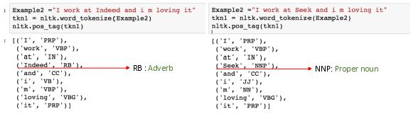
Approach NER: Named entity recognisation
This extracts the information by identifying the name of places, person, things etc. Example below,
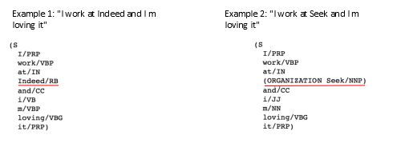
Approach CDF: cumulative distribution function
This assigns values to data from largest to smallest. Steps includes,
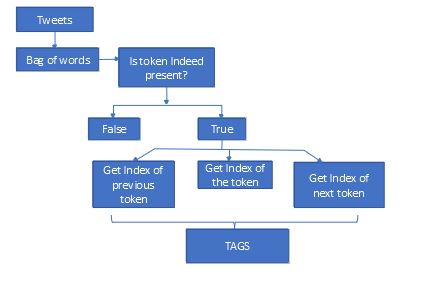
Everyone has different approachs and finding the correct approach to identify relevent and irrelevant tweets is important. Also, The data size does matters. More data we consider the more accurate will be the result. Hope this gives a rough idea about sentiment analysis and various steps involved.